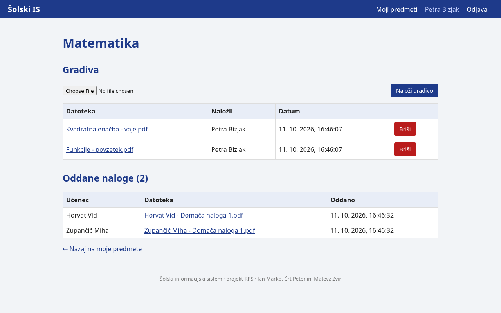
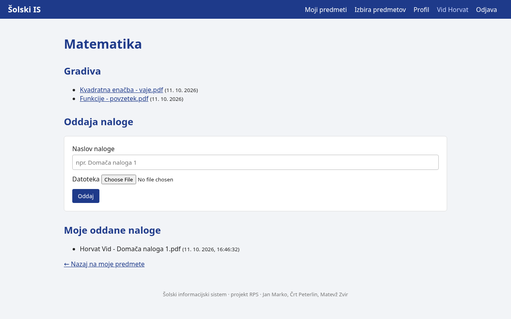
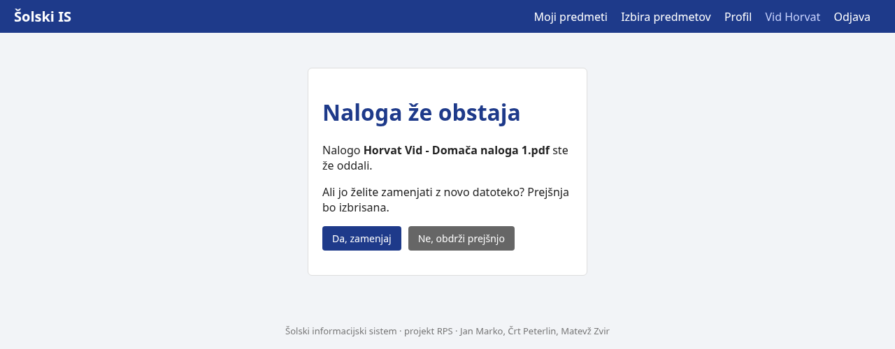

| Predmet: | RPS, Računalniški produkti in storitve |
| Obdobje: | 5. 10. do 11. 10. 2026 |
| Člani: | Jan Marko (vzdrževalec IS), Črt Peterlin (razvijalec), Matevž Zvir (razvijalec) |
| Repozitorij: | https://github.com/janMsc123/sola-is |
| Aplikacija: | https://projekt.pajp.duckdns.org |
Vsi trije pogledi imajo skupno prijavo. Po prijavi strežnik v sejo zapiše vlogo uporabnika in ga preusmeri na njegovo stran. Vsaka pot preveri vlogo na strežniku (preveri.js); učitelj in učenec dodatno vidita samo predmete, ki jih poučujeta oziroma obiskujeta. Kdor odpre stran, ki mu ne pripada, dobi napako 403.

Učenec se registrira, ureja profil, izbere predmete (vsaj 2), prenese gradiva in odda naloge. Datoteka se shrani kot Priimek Ime - Naslov naloge.končnica. Če naloga z istim imenom že obstaja, se prejšnja povozi šele, ko učenec to potrdi.


| Področje | Odločitev |
|---|---|
| Gesla | Zgoščena z algoritmom bcrypt (knjižnica bcryptjs, 10 krogov). V bazi ni nobenega gesla v čistem besedilu. |
| Seje | Piškotek seje je podpisan s ključem SESSION_SECRET iz .env in poteče po 2 urah. |
| Avtorizacija | Pravice se preverjajo na strežniku pri vsaki zahtevi, ne samo s skrivanjem povezav v meniju. |
| Naložene datoteke | Shranjene izven mape public v ločenem Docker volumnu, mapa ima pravice 750. Prenos je mogoč samo prek poti, ki preveri pravico do predmeta. |
| Vsebnik | Aplikacija teče kot navaden uporabnik node, ne kot root. |
| Baza | Nima odprtih vrat navzven; gesla so v .env, ki ni v repozitoriju. |
| SQL | Vse poizvedbe uporabljajo parametre (?), zato vnos uporabnika ne more spremeniti poizvedbe. |
| Varnostne kopije | Skripta scripts/backup.sh vsak dan ob 3:00 izvozi bazo; kopije se hranijo 14 dni. |
Aplikacija je dostopna na https://projekt.pajp.duckdns.org. Zahteva na http:// se preusmeri na https://, potrdilo je od Let's Encrypt. Klic /api/health vrne:
{"status":"ok","db":true}
| Zahteva | Stanje |
|---|---|
| Prijava z vsaj dvema vrstama uporabnikov in avtorizacija | opravljeno |
| Gesla shranjena samo zgoščena | opravljeno |
| Učitelj vidi in ureja samo gradiva svojih predmetov | opravljeno |
| Ponovna oddaja povozi prejšnjo šele po potrditvi učenca | opravljeno |
| Pravice dostopa do map z datotekami | opravljeno |
| Skripta za varnostne kopije baze | opravljeno |
| Aplikacija na javni domeni | opravljeno |
Testni primeri za vse tri poglede in GitHub Issues za najdene napake. Vzdrževalec IS pripravi tehnično dokumentacijo in diagram arhitekture, razvijalca uporabniška navodila in skice.